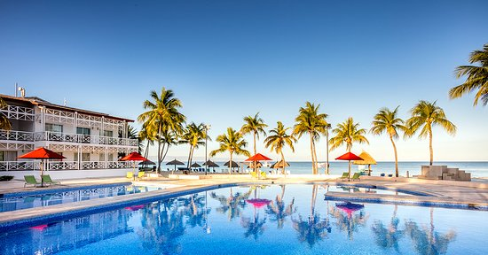

DECOUVREZ HAITI

LABADEE
La baie de Labadie, ainsi que le village du même nom, est située au nord d'Haïti, à une quinzaine de kilomètres de Cap-Haïtien. C'est un endroit paradisaque aux eaux d'un bleu profond. Le village, essentiellement peuplé de pêcheurs, est accessible seulement par bateau.
CÔTE DES ARCADINS
 L'histoire de la ville est également liée à la production de café dans les montagnes avoisinantes, aux abords du pic Macaya. L'activité de la pêche est présente dans le port. La région s'est reconvertie dans les années 1960 dans la culture du vétiver avec la fabrication d'huile essentielle exportée vers la ville des Cayes.
L'activité de la ville est essentiellement dominée par le tourisme national des Haïtiens, qui viennent sur les plages de sable fin donnant sur la mer des Caraïbes. La plage Dauphinée, l'une des plages les plus fameuses de l'île d'Haïti, se trouve à Port-Salut.
L'histoire de la ville est également liée à la production de café dans les montagnes avoisinantes, aux abords du pic Macaya. L'activité de la pêche est présente dans le port. La région s'est reconvertie dans les années 1960 dans la culture du vétiver avec la fabrication d'huile essentielle exportée vers la ville des Cayes.
L'activité de la ville est essentiellement dominée par le tourisme national des Haïtiens, qui viennent sur les plages de sable fin donnant sur la mer des Caraïbes. La plage Dauphinée, l'une des plages les plus fameuses de l'île d'Haïti, se trouve à Port-Salut.
PORT-AU-PRINCE?
Port-au-Prince, la capitale d’Haïti, est le centre d’attraction où l’art et la culture occupent une place fondamentale dans la société. Si vous séjournez à Port-au-Prince, voici quelques sites incontournables à visiter : le village artistique de Noailles (à Croix-des-Bouquets), les vestiges de Fort Jacques et Fort Alexandre (à Kenscoff), la galerie d’art Atis Rezistans (au Boulevard Jean-Jacques Dessalines)..

CÔTE DES ARCADINS?
Envie de faire une petite baignade à la mer ? Direction : Côte des Arcadins ! Sur cette côte, vous découvrirez de belles plages de sable blanc au bord des eaux d’un bleu turquoise. Un rendez-vous incontournable pour des touristes qui recherchent le soleil ! Vous pourrez également visiter des sites touristiques aux alentours.
JACMEL?
Jacmel, la capitale culturelle d’Haïti, est célèbre pour son carnaval qui attire chaque année, des milliers de visiteurs locaux et internationaux. Si vous aimez l’art, faites donc un petit tour aux galeries et lieux d’exposition. Aussi, vous aurez l’occasion d’explorer de magnifiques endroits à couper le souffle tels que : Bassin Bleu, Raymond Les Bains, Cayes-Jacmel et autres.

CAP HAITIEN?
Votre prochaine destination touristique : le Cap-Haïtien. Le Cap est la deuxième ville d’Haïti qui regorge de nombreux et beaux sites historiques et touristiques sans oublier ses plages enchanteresses. Durant votre passage, vous devez absolument visiter : le Palais de Sans-Souci, la Citadelle Laferrière (ou Citadelle Henri Christophe), le monument de Vertières, la Cathédrale Notre-Dame de l’Assomption, l’Île-à-Rat, Cormier, entre autres.
MUSÉE PANTHÉON?
Plongez dans l’histoire du pays en visitant le Musée du Panthéon National Haïtien. Situé à Port-au-Prince, le MUPANAH présente les héros de l’Indépendance, ainsi que le patrimoine historique et culturel haïtien. Vous pouvez également apprécier certaines œuvres d’art réalisées par des grands peintres haïtiens. Le musée offre tous les jours de la semaine des visites guidées.